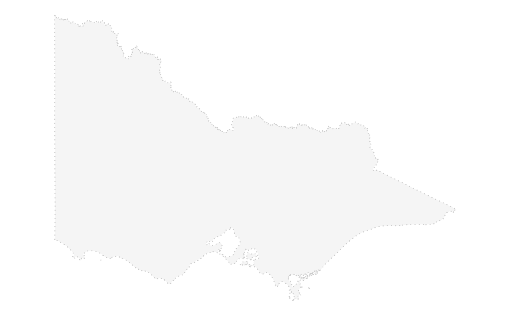

plot_map allows you to quickly create a ggplot with your base map
and cubble object, with some default aesthetic and theme settings.
plot_map(map_data, point_data, print_code = FALSE)the dataset contains the map object, an sf object
a cubble object to plot the site
whether to print out the ggplot2 code, default to FALSE
a ggplot object
It should generally be used to quickly create some prototype maps. To make
further modification on the map, set print_code = TRUE. This will print
the code in the console as well as write it into the clipboard (so you can
directly paste it into your script).
library(ggplot2)
state_map <- rmapshaper::ms_simplify(ozmaps::abs_ste, keep = 2e-3)
# a quick plot
plot_map(state_map, climate_aus)

if (FALSE) {
# print out the ggplot2 code of the map
plot_map(state_map, climate_aus, print_code = TRUE)
}